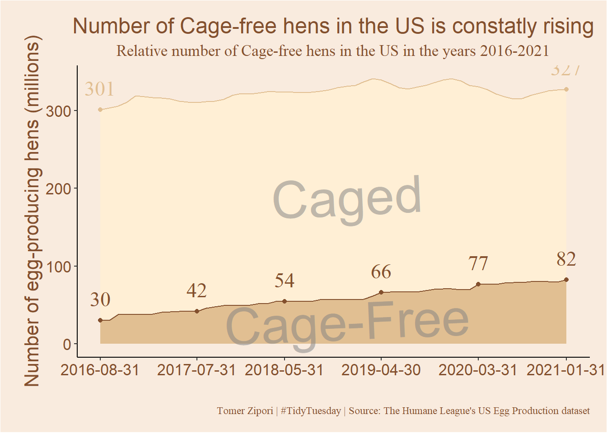

library(tidytuesdayR) # for easy data loading
library(tidyverse) # for data pre-processing and wrangling
library(lubridate) # makes dealing with date format much easier
library(showtext) # fontsBackground
Some time ago, when the fall semester began I’ve enrolled on a course called Data science lab as part of the ‘Data Science for the Social Sciences’ program. One of the assignments was to make some TidyTuesday contribution and present it in class. So this is my submission and what I consider as my first respectable attempts at visualizing data.
The Data
From the Github repo:
The data this week comes from The Humane League’s US Egg Production* *dataset by Samara Mendez. Dataset and code is available for this project on OSF at US Egg Production Data Set.
This dataset tracks the supply of cage-free eggs in the United States from December 2007 to February 2021. For TidyTuesday we’ve used data through February 2021, but the full dataset, with data through the present, is available in the OSF project.
Let’s start!
Setup
Libraries
Loading fonts
showtext is an awesome package that allows to load installed fonts into R and use it in ggplot2 plots (for example). For a really helpful video that I used see this video from the Riffomonas Project.
font_add(family = "Stencil", regular = "STENCIL.TTF")
showtext_auto()Loading data
eggproduction <- readr::read_csv('https://raw.githubusercontent.com/rfordatascience/tidytuesday/master/data/2023/2023-04-11/egg-production.csv')
cagefreepercentages <- readr::read_csv('https://raw.githubusercontent.com/rfordatascience/tidytuesday/master/data/2023/2023-04-11/cage-free-percentages.csv')Taking a peak
head(eggproduction)# A tibble: 6 × 6
observed_month prod_type prod_process n_hens n_eggs source
<date> <chr> <chr> <dbl> <dbl> <chr>
1 2016-07-31 hatching eggs all 57975000 1147000000 ChicEggs-09-23-…
2 2016-08-31 hatching eggs all 57595000 1142700000 ChicEggs-10-21-…
3 2016-09-30 hatching eggs all 57161000 1093300000 ChicEggs-11-22-…
4 2016-10-31 hatching eggs all 56857000 1126700000 ChicEggs-12-23-…
5 2016-11-30 hatching eggs all 57116000 1096600000 ChicEggs-01-24-…
6 2016-12-31 hatching eggs all 57750000 1132900000 ChicEggs-02-28-…eggproduction holds monthly data about number of hens and produced eggs in the US. prod_type specifies the type of egg produced, it has 2 levels:
unique(eggproduction$prod_type)[1] "hatching eggs" "table eggs" For the current mini-project, I’ll stay with “table eggs” only.
The variable prod_process specifies the type of housing of the egg-producing hens. It has 3 levels:
unique(eggproduction$prod_process)[1] "all" "cage-free (non-organic)"
[3] "cage-free (organic)" I’ll leave data of all hens for now.
Pre-processing 1
Filtering out irrelevant data and renaming some variables.
egg_clean <- eggproduction %>%
filter(prod_type != "hatching eggs" & prod_process == "all") %>% # Leave only eggs meant for eating and general data
select(-source, -prod_type, -prod_process, n_hens_all = n_hens, n_eggs_all = n_eggs) # Irrelevant columnsTaking a peak 2
head(cagefreepercentages)# A tibble: 6 × 4
observed_month percent_hens percent_eggs source
<date> <dbl> <dbl> <chr>
1 2007-12-31 3.2 NA Egg-Markets-Overview-2019-10-19.pdf
2 2008-12-31 3.5 NA Egg-Markets-Overview-2019-10-19.pdf
3 2009-12-31 3.6 NA Egg-Markets-Overview-2019-10-19.pdf
4 2010-12-31 4.4 NA Egg-Markets-Overview-2019-10-19.pdf
5 2011-12-31 5.4 NA Egg-Markets-Overview-2019-10-19.pdf
6 2012-12-31 6 NA Egg-Markets-Overview-2019-10-19.pdfThis data-frame also holds monthly data. The variable percent_hens specifies observed or computed percentage of cage-free hens relative to all table-egg-laying hens (from the Github repo). We’ll select these variables and use them to merge with the first data-frame.
egg_clean2 <- cagefreepercentages %>%
drop_na(percent_eggs) %>% # droping rows with missing percent_eggs data
select(-source, -percent_eggs, cagefree_percent_hens = percent_hens) %>% # Irrelevant\to many NA's columns + renaming
inner_join(egg_clean, by = "observed_month", multiple = "all") %>% # joining with the first data-frame
mutate(Cagefree = (cagefree_percent_hens * n_hens_all) / 100) %>% # calculating number of cage-free hens
mutate(Traditional = n_hens_all - Cagefree) %>% # calculating number of traditional housing hens
select(observed_month, Cagefree, Traditional) %>%
pivot_longer(cols = c("Cagefree", "Traditional"), names_to = "housing", values_to = "n_hens")Plotting
Gameplan
Few hours deep, I’ve decided it would be interesting to see the change in number of cage-free hens compared to caged hens during the time period we have data about. Because I wanted to plot only certain points of data along the time axis, I needed to create a subset of the big data-frame that holds the data for the points I wanted to plot.
Identitfying the dates of interest
First thing, I found 6 dates that are equally spaced between the start and end points. The repetitive code below is quite ugly, and lubridate probably has a nice and elegant solution, I didn’t want to spend to much time on it.
dates_for_plot <- seq.Date(egg_clean2$observed_month[1], egg_clean2$observed_month[nrow(egg_clean2)], length.out = 6)
dates_for_plot[2] <- as.Date("2017-07-31")
dates_for_plot[3] <- as.Date("2018-05-31")
dates_for_plot[4] <- as.Date("2019-04-30")
dates_for_plot[5] <- as.Date("2020-03-31")Creating the subset
I will use this subset in order to plot the 6 points on the general data. I will only need to specify data = subset_for_points in the relevant geom object.
subset_for_points <- egg_clean2 %>%
filter((housing == "Cagefree" & observed_month %in% dates_for_plot) |
(housing == "Traditional" & (observed_month == dates_for_plot[1] | observed_month == dates_for_plot[6]))) %>%
inner_join(select(egg_clean, observed_month, n_hens = n_hens_all), by = "observed_month") %>%
mutate(n_hens = case_when(housing == "Cagefree" ~ n_hens.x,
housing == "Traditional" ~ n_hens.y)) %>%
select(-n_hens.x, -n_hens.y)Actually plotting
I went with a simple stacked density plot. Watch how the number of cage-free goes from
Code
plot <- egg_clean2 %>%
ggplot(aes(x = observed_month, y = n_hens/1000000, fill = factor(housing, levels = c("Traditional", "Cagefree")),
color = factor(housing, levels = c("Traditional", "Cagefree")),
label = n_hens/1000000)) +
geom_density(position = 'stack', stat = 'identity') +
geom_point(data = subset_for_points) +
geom_text(data = subset_for_points, aes(label = round(n_hens/1000000)), hjust = 0.5, vjust = -1, size = 6, family = "serif") +
scale_fill_manual(values = c("#ffefd5", "#e1bf92")) +
scale_color_manual(values = c("#e1bf92", "#83502e")) +
annotate(geom = "text", x = as_date("2019/1/1"), y = 30, label = "Cage-Free", color = "#808080",
family = "Stencil", angle = 2.5, size = 15, alpha = 0.5) +
annotate(geom = "text", x = as_date("2019/1/1"), y = 190, label = "Caged", color = "#808080",
family = "Stencil", angle = 2.5, size = 15, alpha = 0.5) +
scale_x_date(breaks = dates_for_plot) +
xlab("") +
ylab("Number of egg-producing hens (millions)") +
labs(fill = "Housing", title = "Number of Cage-free hens in the US is constatly rising",
subtitle = "Relative number of Cage-free hens in the US in the years 2016-2021",
caption = "Tomer Zipori | #TidyTuesday | Source: The Humane League's US Egg Production dataset") +
guides(color = "none", fill = "none") +
theme_classic() +
theme(axis.title = element_text(size = 16, color = "#83502e"),
axis.text.x = element_text(size = 13, color = "#83502e"),
axis.text.y = element_text(size = 13, color = "#83502e"),
plot.title = element_text(hjust = 0.5, size = 18, color = "#83502e"),
plot.subtitle = element_text(hjust = 0.5, size = 13, family = "serif", color = "#83502e"),
plot.caption = element_text(family = "serif", color = "#83502e"),
plot.margin = margin(0.5,0.5,0.5,0.7, "cm"),
plot.background = element_rect(fill = "#F9EBDE"),
panel.background = element_rect(fill = "#F9EBDE"))
plot
Conclusion
There is a steady and relative fast growth in cage-free hens in the US, compared with caged-housed hens. Nice. As I said in the beginning. this is my first TidyTuesday contribution, and the first data visualization attempts that I felt worthy of posting lol. I learned a few tricks along the way for example:
1. lubridate’s date format is super nice to work with. It can be seq’t along and do all kind of efficient things for dealing with timely data.
2. Referencing more then one data-frame in a single ggplot(), Seems obvious, but I didn’t think about this solution to plotting just some of the data until this mini-project.
3. Many-many things about aesthetics of ggplot2, like the annotate() and labs() functions and arguments.